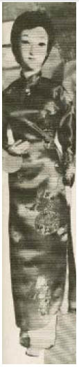

Dưới một cái giếng. Bọn họ quẳng hai gã xuống một cái giếng chết tiệt.
Tại sao chứ? Tất cả những gì gã làm là lặp lại những lời nhảm nhí khó hiểu của Louis trong một vài cửa hàng ở quảng trường chợ. Trắng như sữa. Đen như một mảnh trời đêm lồng trong vàng.
Và, Nerron? Ánh mắt căm ghét gã hàng thịt béo ú nhìn người trừng trừng không đủ cảnh báo người sao?
Gã bấu vào thành giếng trơn tuột. Eaumbre đang trôi dạt trong dòng nước lờ lợ. Nam nhân ngư nhìn trừng trừng lên gã bằng ánh mắt tối sầm, như thể việc này là do lỗi của gã. Rõ ràng là với bộ da vảy kia nam nhân ngư có thể sống sót dưới này hàng năm trời.
Vì muốn trở thành kẻ giỏi nhất, vì danh tiếng trường tồn của thợ săn kho báu! Một cái giếng, Nerron! Người dân Champlitte giờ chỉ còn dùng cái giếng ấy để quẳng những vị khách khó ưa xuống. Nước máy, đèn khí gas... Ở bất cứ nơi nào có cuộc sống sung túc, người ta không thích những kẻ lạ mặt, nhất là những kẻ lạ mặt với làn da đá.
Nerron tì trán lên thành giếng ẩm ướt. Đừng nhìn xuống dưới.
Nước. Nỗi sợ hãi của người Goyl.
Gã cố nâng tấm sắt người ta dùng đậy miệng giếng lên, nhưng sau khi bị rơi trở xuống bên cạnh nam nhân ngư vì nỗ lực không thành công, gã không cố thêm nữa. Quần áo gã vẫn ẩm ướt và nhầy nhụa như thịt ốc sên.
Niềm an ủi duy nhất của gã là Reckless giờ đây cũng chưa đoạt được cây nỏ. Có lẽ một ngày nào đó một nhà nghiên cứu khoa học trong lúc khai quật những viên đá cổ, sẽ câu được chút tàn dư nguyên vẹn còn sót lại của gã và tự hỏi tại sao gã lại mang một cái đầu bằng vàng và một bàn tay bị chặt đứt lìa xuống dưới này.
Nerron rên rỉ - móng vuốt gã giờ đây đau đớn như thể ai đó đang rút chúng ra khỏi ngón tay gã - gã áp người vào thành giếng lạnh lẽo khi nghe thấy có tiếng nói phát ra từ bên trên. Không lẽ dân chúng quay trở lại, vì họ quyết định rằng tốt hơn nên thiêu sống gã, như cái cách trước đây họ ưa dùng ở Austrien với những kẻ như gã?
Tấm sắt được nâng lên. Họ bị quẳng xuống giếng lúc chiều, nhưng một góc bầu trời mà Nerron trông thấy bây giờ còn tối đen hơn cả làn da gã. Ánh sáng ngọn đèn lồng tỏa ra trên đầu khiến gã nheo đôi mắt vàng lại.
“Thật là một cảnh tượng hay họ làm sao!” Một giọng mũi vang vọng bên trong giếng.
Arsene Lelou nhìn chằm chằm xuống gã đầy thỏa mãn như một đứa trẻ nhìn con côn trùng mới tóm được. Nerron chưa bao giờ nghĩ rằng ánh mắt của lão Bọ có thể khiến gã vui sướng đến thế.
Những ngón tay đau của gã khó khăn nắm lấy sợi thừng Lelou thả xuống giếng. Ai đó thô bạo kéo gã dọc thành giếng, làm trầy xước làn da đá của gã. Nerron biết khuôn mặt khó ưa ấy, trong nhà của anh họ Louis. Tên đầy tớ giúp việc trong bếp. Râu Sữa. Chính hắn cũng tự gọi mình bằng cái tên ấy. Hắn ném Nerron lên mặt đất như thể hắn đã dành cả cuộc đời khốn khổ của mình ao ước được chạm những ngón tay thô kệch vào một người Goyl.
“Làm gã đau thôi, đừng giết gã chứ!” Lelou gí gí mũi ủng nhọn vào bên sườn Nerron. Chúng bốc mùi sáp đánh giày. Lão Bọ bỏ hàng giờ đánh bóng đôi ủng đính khuy của lão. “Các người nghĩ gì vậy hả?” lão rít lên. “Rằng ta sẽ mang con trai đang ngủ như công chúa Bạch Tuyết về cho Vua Gù và bị xử trảm thế mạng cho các ngươi sao? Chúng ta đã không thỏa thuận như thế! Bột tiên nhí! Lẽ ra các ngươi phải cố làm tốt hơn nữa nếu muốn dắt mũi Arsene Lelou chứ!”
Lão Bọ thích tự xưng ở ngôi thứ ba.
“Lấy cái ba lô của gã!” lão ra lệnh.
Tên đầy tớ giẫm ủng lên thắt lưng Nerron mạnh đến nỗi gã tưởng nghe thấy cột sống mình gãy ra.
“Ta hy vọng ngươi vẫn còn giữ cái đầu và bàn tay,” Lelou thì thầm, “nếu không ta sẽ quẳng ngươi trở xuống giếng. Chúng ta sẽ cùng nhau đi tìm chiếc nỏ, và nếu ngươi còn cố trốn thoát một lần nữa, ta sẽ đánh điện báo cho Vua Gù biết ngươi đã làm gì với con trai ông.”
Râu Sữa lôi Nerron đứng dậy. Đám đông đang theo dõi họ. Phân nửa cư dân Champlitte đang tụ tập quanh giếng dù trời đã khuya. Không chỉ có gã bán thịt trông rõ là thất vọng vì tên mặt đá vẫn còn sống. Có lẽ gã là người Goyl đầu tiên mà họ trông thấy bằng xương bằng thịt. Quên Albion đi! Nerron muốn hét vào mặt Kami’en như thế. Đi mà chiếm đóng Lothringen. Nerron muốn thấy tất cả bọn họ phải chết - những cư dân dũng cảm của Champlitte, những kẻ lấy việc dìm chết gã như dìm chết một con mèo làm trò mua vui.
Lelou thúc súng vào sườn gã.
“Tiếp tục đi. Kéo tên nam nhân ngư lên!” lão quát tên đầy tớ. Ma xui quỷ khiến thế nào mà lão lại tìm ra bọn họ chứ?
Câu trả lời đang chờ trước cửa hàng của tay bán thịt hăng hái. Số vàng ròng trang trí cho cỗ xe ngựa của anh họ Louis có thể nuôi sống không chỉ tay hàng thịt mà toàn bộ dân chúng Champlitte trong cả năm. Ngồi bó gối ở chỗ của xà ích là tay huấn luyện bầy chó săn cho anh họ của thái tử. Từ khi ở Vena hắn vẫn thường nhìn Nerron trừng trừng như thể hắn chẳng muốn gì hơn là xua bầy chó ra bắt lấy một tên Goyl. Hắn mang theo hai con trong bầy chó. Giống chó săn Anh quốc. Chúng ngồi xổm bên cạnh hắn và lập tức nhe răng nanh ra ngay khi nhìn thấy Nerron. Chết tiệt. Gã thậm chí chưa từng cố xóa dấu vết của mình! Gã đánh giá quá thấp lão Bọ.
“Leo lên!” Lelou đẩy gã lên xe ngựa.
Louis nằm trên một băng ghế bọc vàng, đang ngáy như lợn với cái miệng há ra. Lelou lay vai hắn. “Tỉnh dậy đi, thái tử! Chúng thần đã tìm thấy bọn chúng!”
Tỉnh dậy ư? Không dễ đâu.
Nhưng Louis thật sự đã mở mắt. Đôi mắt hắn sưng húp và tròng mắt vằn đỏ, nhưng Hoàng Tử Bé đã tỉnh lại.
Lelou ném cho Nerron một ánh mắt đắc thắng.
“Trứng cóc.” Lão dẩu môi nở một nụ cười tự mãn. “Hai nghiên cứu ở thế kỷ mười bảy đã thống nhất cho nó là thuốc giải cho quả táo của Bạch Tuyết.”
Nerron chưa bao giờ nghe về điều này, nhưng trứng có vẻ có tác dụng, ngay cả khi ánh mắt của Louis trông còn đờ đẫn hơn bình thường
“Làm sao mà lũ chó có thể tìm ra dấu chúng tôi nhanh thế?”
Lelou nhìn gã với ánh mắt khinh miệt đầy thương hại. Màn trình diễn thảm hại của người ở dưới giếng đã phá hỏng bết tác dụng của ba món lưu niệm, Nerron. “Bọn ta không cần bầy chó. Suốt nhiều ngày nay Louis không thốt ra từ nào khác hơn ngoài ‘Champlitte’.”
Đúng vậy, đó là tác dụng của quả táo của Bạch Tuyết. Hầu hết những nạn nhân, trong trường hợp tỉnh lại, trong nhiều năm liền không lảm nhảm gì hơn những lời họ nói ra lúc tiên tri.
Louis lại bắt đầu ngáy.
Lelou nhăn trán. “Ta nghĩ là chúng ta phải tăng liều thuốc lên,” lão nói với tay huấn luyện chó. “Tốt. Điều này rõ ràng đã trả lời được câu hỏi liệu chúng ta có còn cần nam nhân ngư nữa hay không. Ta chắc chắn là hắn tìm trứng cóc rất lành nghề.”
Lão nhìn xuống Eaumbre vừa được Râu Sữa kéo ra khỏi giếng. Những cư dân Champlitte bước lùi lại khi nam nhân ngư, người ướt sũng nước, bị xô đẩy đi ngang qua quảng trường.
“Vậy thì, Goyl” Lelou nhìn Nerron. “Trước khi ta bắt đầu tự hỏi ngươi có còn giá trị lợi dụng cho bọn ta không... Quả tim ở đâu?”
“Đưa chiếc túi-giấu-đồ có cái đầu bên trong cho lũ chó,” Nerron nói.
Nếu họ may mắn, thì nó vẫn còn mùi của Reckless trên đó.